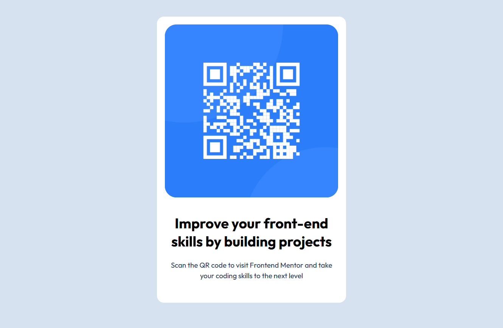
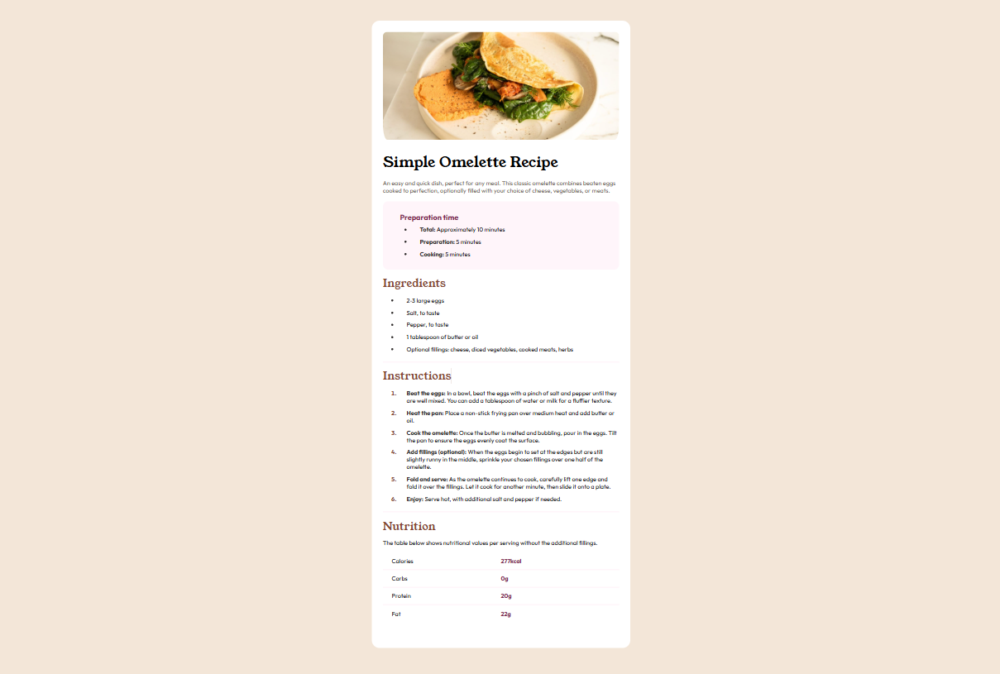
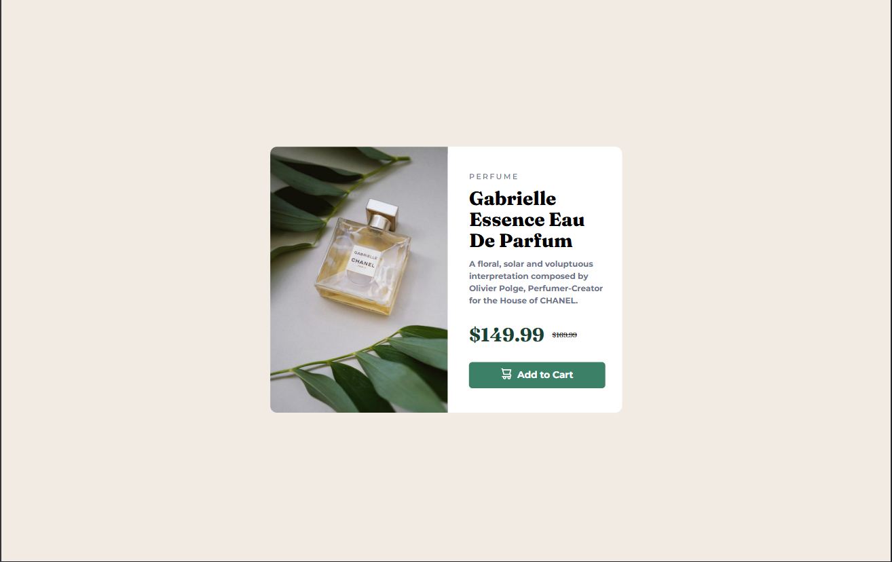
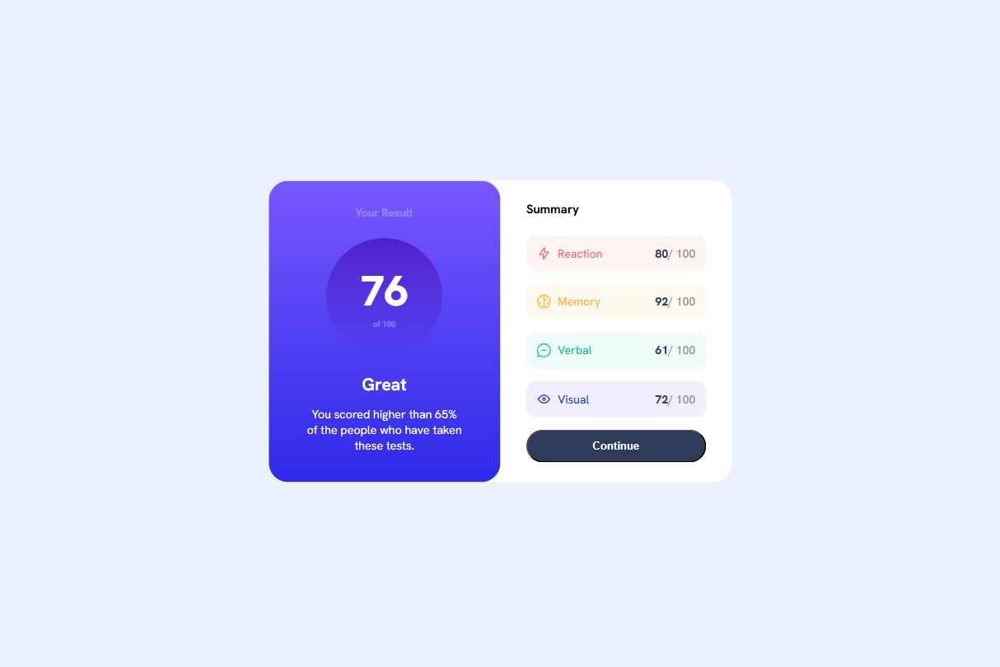
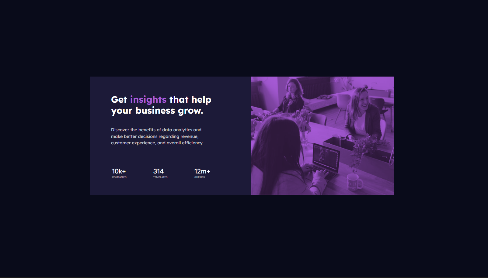
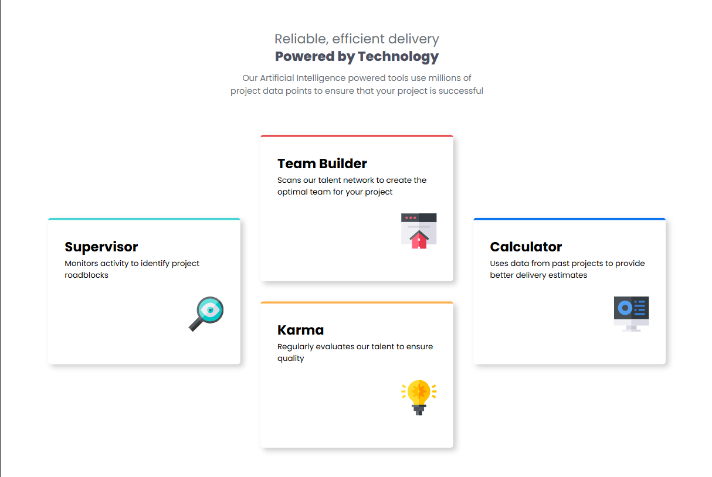
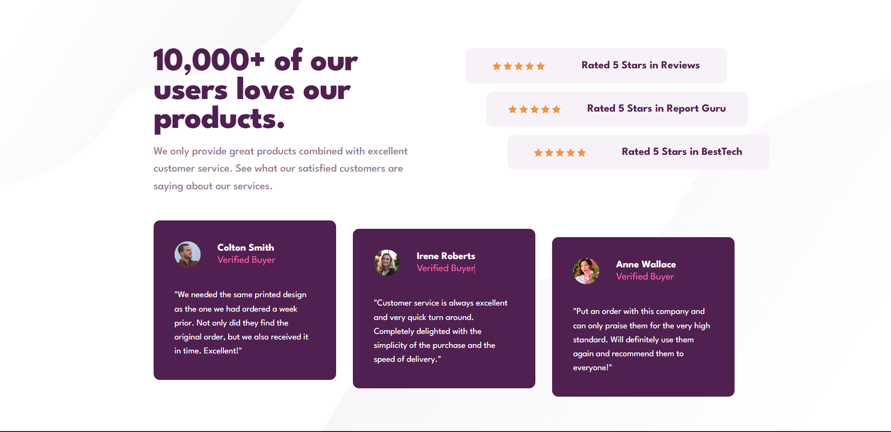
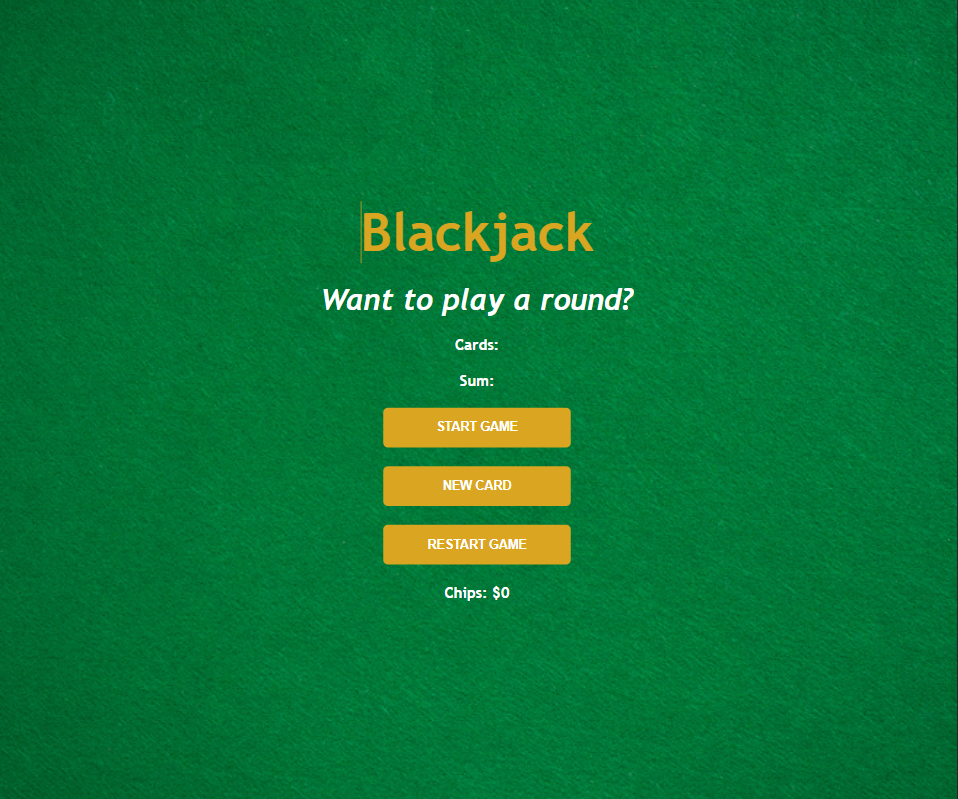

QR Code Component Card
HTML
CSS
I built a simple QR code card. I learned how to structure a small page and use CSS Grid to center and space its content.
My projects show my growth from building simple components to creating detailed, responsive landing pages while strengthening my skills in Grid and Flexbox.

I built a simple QR code card. I learned how to structure a small page and use CSS Grid to center and space its content.

I created a card for a blog article, with its category, date and author. I practised Flexbox and making text easy to scan.

I built a profile card with social links. I learned to align elements neatly and keep repeated styles consistent.

A recipe page with ingredients, instructions and nutrition details. I practised using semantic headings, lists and tables to organise information.

I created a product card with images suited to different screen sizes. I learned how the "picture" element can support responsive images.

I built a results card displaying scores across categories. I practised grouping information and using visual contrast to make results clear.

I created a card combining statistics and a tinted image. I learned to use CSS blend modes to style imagery.

I arranged four feature cards into a responsive layout. I learned to use CSS Grid span to manage cards with different positions.

I built a page featuring customer ratings and testimonials. I practised positioning and transforms to create a more layered composition.

I built a responsive hotel booking confirmation page. I learned to scale a design across screen sizes and use transforms for visual positioning

I built a landing page showcasing a product and its features. I practised organising multiple sections into a responsive page.

I created a multi-section landing page for a digital bank. I practised combining Grid and Flexbox across a responsive layout
.png)
I created a multi-section landing page for a digital bank. I practised combining Grid and Flexbox across a responsive layout

I created a multi-section landing page for a digital bank. I practised combining Grid and Flexbox across a responsive layout